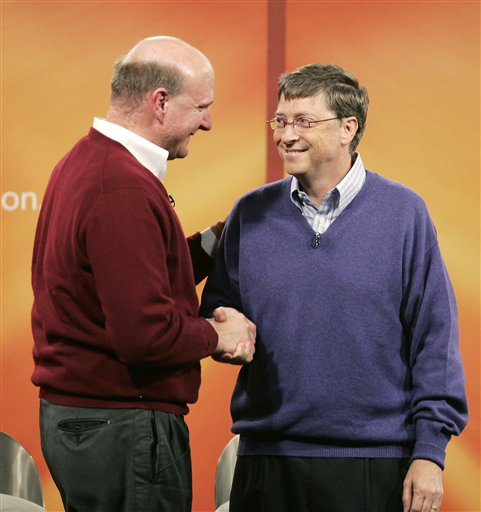
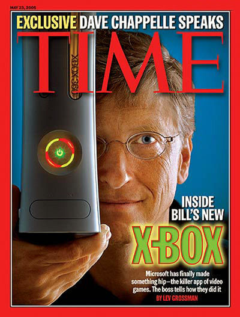

Bill to Steve:“It was fun while it lasted.”
In June 2006, we learned that Bill Gates would step down from Microsoft in June 2008. This gave plenty of warning for the markets, but it also means that Steve Ballmer will remain as CEO for a decade or more, the rumors of his demise having been greatly exaggerated.
One can presume that Bill Gates doesn't believe his legacy is furthered by spending any more time at Microsoft. Given the twin threats of free software and Google, history may judge Bill Gates more as an Andrew Carnegie than a Michelangelo.
Microsoft succeeded because it was the company that exploited Metcalfe's law to its greatest advantage. Microsoft got everyone using MS-DOS, which it used to suck customers into Windows, Office, and everything else. Few other companies had this strategy, or the resources.
Bill Gates has provided a lot of leadership to the computing industry over the last few decades. In areas from graphical user interfaces to integrated productivity tools, to software as a service, to the web lifestyle, so his stepping down could be a greater loss to the industry than even Microsoft's demise. Who else can provide such vision, something that rallies the entire industry?
That said, Bill hasn't provided too much leadership in recent years. The last time he was on the cover of Time Magazine, he was talking about the XBox 360.

Why is Bill not smiling? Perhaps because the XBox 360 is a PC minus a keyboard, web browser and lots of other software.
There may be several reasons why Bill hasn't remained an iconic figure for the industry over the last few years. Part of it is that Microsoft doesn't seem to have anything new to say. HTML has changed very little in the last six years, and so Microsoft doesn't have anything to talk about regarding the web.
Secondly, what happens with Microsoft doesn't matter as much to the computer industry. Lots of people building websites are building them in PHP, a free programming language. MySQL is the second most popular database in North America, so all of those users don't care about what's included in the latest Microsoft SQL Server, or how it integrates better than ever with the latest Windows. Vista was a major release, but it has no must-have features, and so the excitement was muted. (Windows 95's major innovation was 32-bit computing.) OpenDocument format is a specification almost as important as HTML, but Microsoft doesn't support it, so Bill can't talk about it.
Bill Gates signed the ultimate Faustian bargain in the history of business: proprietary software made Microsoft the most valuable company ever created, but it was destined to fail because it didn't adopt an expansive licensing agreement that let its users contribute back to the system.
If Windows NT had adopted GPL, there would have been no reason to invent Linux. Unix predates Microsoft DOS, and so perhaps DOS and Windows wouldn't have been invented if those various Unixes had been GPL from the beginning.
A lot of software has been proprietary since computers were invented, but it is interesting to wonder where we'd be today if GPL had been the standard license agreement from the very beginning. The industry would be very different, and certainly a lot further along.
Even though free software obviates the need for Microsoft's existence, history may remember Bill Gates for many other things separate from his role in the company. The Gates Foundation has $80 billion to spend which is enough to hire 20,000 skilled workers for 40 years. Spending $80 billion is much harder than it sounds, especially if it is invested in projects which create value, and in turn generate revenues! Bill has the resources to get involved in very big efforts, including space exploration. (Comedian Dennis Miller said that Bill Gates is just a monocle and a Persian Cat away from being a James Bond villain.)